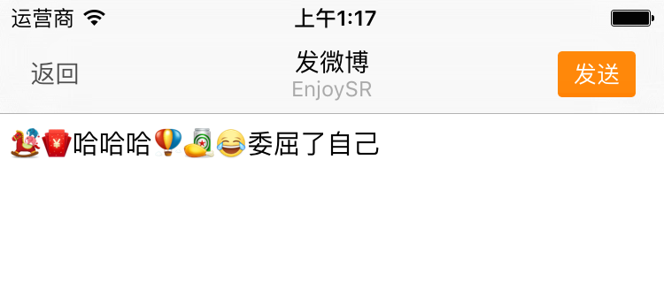

HMEmoticonPageCell 中监听表情按钮点击 -- 在添加按钮的时候添加/// 添加表情按钮
private func addEmoticonButtons(){
for _ in 0..<HMEmoticonPageNum {
let button = UIButton()
// 添加点击事件
button.addTarget(self, action: "emoticonButtonClick:", forControlEvents: UIControlEvents.TouchUpInside)
// 设置字体大小
button.titleLabel?.font = UIFont.systemFontOfSize(36)
contentView.addSubview(button)
emoticonButtons.append(button)
}
}
/// 表情按钮点击
///
/// - parameter button: <#button description#>
@objc private func emoticonButtonClick(button: UIButton) {
printLog("表情按钮点击了")
}
接下来需要做哪些事情？
textView 中自定义表情按钮 HMEmoticonButton
class HMEmoticonButton: UIButton {
var emoticon: HMEmoticon?
}
HMEmoticonPageCell 中 emoticonButtons 数据类型// 装有所有表情按钮的集合
private lazy var emoticonButtons: [HMEmoticonButton] = [HMEmoticonButton]()
HMEmoticonPageCell 设置数据的时候给每一个表情按钮设置数据// 遍历当前设置的表情数据
for (index,value) in emoticons!.enumerate() {
let button = emoticonButtons[index]
// 设置表情属性
button.emoticon = value
// 显示当前遍历到的表情按钮
button.hidden = false
if !value.isEmoji {
let image = UIImage(named: "\(value.path!)/\(value.png!)")
button.setImage(image, forState: UIControlState.Normal)
button.setTitle(nil, forState: UIControlState.Normal)
}else{
button.setImage(nil, forState: UIControlState.Normal)
button.setTitle((value.code! as NSString).emoji(), forState: UIControlState.Normal)
}
}
HMEmoticonButton 中的 emoticon 的 didSet 方法中var emoticon: HMEmoticon? {
didSet{
// 显示表情数据
if !emoticon!.isEmoji {
let image = UIImage(named: "\(emoticon!.path!)/\(emoticon!.png!)")
self.setImage(image, forState: UIControlState.Normal)
self.setTitle(nil, forState: UIControlState.Normal)
}else{
self.setImage(nil, forState: UIControlState.Normal)
self.setTitle((emoticon!.code! as NSString).emoji(), forState: UIControlState.Normal)
}
}
}
HMEmoticonPageCell 中 emoticons 的 didSet 方法/// 当前页显示的表情数据
var emoticons: [HMEmoticon]? {
didSet{
// 先隐藏所有的表情按钮
for value in emoticonButtons {
value.hidden = true
}
// 遍历当前设置的表情数据
for (index,value) in emoticons!.enumerate() {
let button = emoticonButtons[index]
// 设置表情属性
button.emoticon = value
// 显示当前遍历到的表情按钮
button.hidden = false
}
}
}
CommonTools 中添加表情按钮点击通知// 表情按钮点击通知
let HMEmoticonDidSelectedNotification = "HMEmoticonDidSelectedNotification"
/// 表情按钮点击
@objc private func emoticonButtonClick(button: HMEmoticonButton) {
//发送表情按下的通知
NSNotificationCenter.defaultCenter().postNotificationName(HMEmoticonDidSelectedNotification, object: self, userInfo: ["emoticon": button.emoticon!])
}
HMComposeViewController 注册通知// 监听表情按钮点击的通知
NSNotificationCenter.defaultCenter().addObserver(self, selector: "emoticonDidSelected:", name: HMEmoticonDidSelectedNotification, object: nil)
/// 表情按钮点击发送通知监听的方法
@objc private func emoticonDidSelected(noti: NSNotification){
// 需要重写 `HMEmoticon` 的 description 属性
printLog(noti.userInfo!["emoticon"])
}
运行测试
attributedText 初始化一个 NSMutableAttributedStringNSTextAttachment 对象attachment 对象初始化一个 NSAttributedStringattributedString 添加到第 1 步的可变的 NSMutableAttributedStringtextView 的 attributedText注意区分
emoji表情与图片表情
emoticonDidSelected 方法中测试/// 表情按钮点击发送通知监听的方法
@objc private func emoticonDidSelected(noti: NSNotification){
printLog(noti.userInfo!["emoticon"])
// 判断 emoticon 是否为空
guard let emoticon = noti.userInfo!["emoticon"] as? HMEmoticon else {
return
}
if !emoticon.isEmoji {
// 通过原有的文字初始化一个可变的富文本
let originalAttributedString = NSMutableAttributedString(attributedString: textView.attributedText)
// 通过表情模型初始化一个图片
let image = UIImage(named: "\(emoticon.path!)/\(emoticon.png!)")
// 初始化文字附件，设置图片
let attatchment = NSTextAttachment()
attatchment.image = image
// 通过文字附件初始化一个富文本
let attributedString = NSAttributedString(attachment: attatchment)
// 添加到原有的富文本中
originalAttributedString.appendAttributedString(attributedString)
// 设置 textView 的 attributedText
textView.attributedText = originalAttributedString
}else{
// emoji 表情
}
}
运行测试：图片太大
// 图片宽高与文字的高度一样
let imageWH = textView.font!.lineHeight
// 调整图片大小
attatchment.bounds = CGRectMake(0, 0, imageWH, imageWH)
运行测试：当输入第二个表情的时候图片大小变小了，没有指定
attributedString的字体大小
attributedString 的字体大小// 通过文字附件初始化一个富文本
let attributedString = NSMutableAttributedString(attributedString: NSAttributedString(attachment: attatchment))
// 设置添加进去富文本的字体大小
attributedString.addAttribute(NSFontAttributeName, value: textView.font!, range: NSMakeRange(0, 1))
运行测试：发现表情图片偏上，调整
attachment的bounds
// 调整图片大小 --> 解决图片大小以及偏移问题
attatchment.bounds = CGRectMake(0, -4, imageWH, imageWH)
运行测试：发现当光标不在最后一位的时候，表情图片依然拼在最后面，解决办法就是调用
NSMutableAttributedString的insertAttributedString的方法，传入index就是当前 textView 的选中范围的location
// 添加到原有的富文本中
// originalAttributedString.appendAttributedString(attributedString)
// 解决当光标不在最后一位的时候添加图片表情的问题
let selectedRange = textView.selectedRange
originalAttributedString.insertAttributedString(attributedString, atIndex: selectedRange.location)
运行测试：当添加图片到光标位置的时候，光标移动到最后一个去了，解决方法：在设置完 textView 的富文本之后调用
selectedRange
selectedRangevar selectedRange = textView.selectedRange
originalAttributedString.insertAttributedString(attributedString, atIndex: selectedRange.location)
// 设置 textView 的 attributedText
textView.attributedText = originalAttributedString
// 更新光标所在位置
selectedRange.location += 1
textView.selectedRange = selectedRange
运行测试：如果选中某一段字符，然后再次输入表情的话，需要用表情把选中的字符替换掉
// 添加到原有的富文本中
// originalAttributedString.appendAttributedString(attributedString)
var selectedRange = textView.selectedRange
// 解决当光标不在最后一位的时候添加图片表情的问题
// originalAttributedString.insertAttributedString(attributedString, atIndex: selectedRange.location)
// 解决 textView 选中文字之后输入表情产生的 bug
originalAttributedString.replaceCharactersInRange(selectedRange, withAttributedString: attributedString)
// 设置 textView 的 attributedText
textView.attributedText = originalAttributedString
// 更新光标所在位置，以及选中长度
selectedRange.location += 1
selectedRange.length = 0
textView.selectedRange = selectedRange
运行测试
if !emoticon.isEmoji {
...
}else{
// emoji 表情
textView.insertText((emoticon.code! as NSString).emoji())
}
运行测试
监听键盘里面删除按钮点击
HMComposeViewController 中监听通知textView 的 deleteBackward 方法在 HMEmoticonPageCell 中给删除按钮添加点击事件
deleteButton.addTarget(self, action: "deleteButtonClick:", forControlEvents: UIControlEvents.TouchUpInside)
CommonTools 中添加常量 HMEmoticonDeleteButtonDidSelectedNotification// 删除按钮点击通知
let HMEmoticonDeleteButtonDidSelectedNotification = "HMEmoticonDeleteButtonDidSelectedNotification"
@objc private func deleteButtonClick(button: UIButton){
//发送表情按下的通知
NSNotificationCenter.defaultCenter().postNotificationName(HMEmoticonDeleteButtonDidSelectedNotification, object: self)
}
HMComposeViewController 中监听通知// 监听删除按钮的通知
NSNotificationCenter.defaultCenter().addObserver(self, selector: "deletedButtonSelected:", name: HMEmoticonDeleteButtonDidSelectedNotification, object: nil)
// 删除按钮点击的通知
@objc private func deletedButtonSelected(noti: NSNotification){
textView.deleteBackward()
}
运行测试
HMEmoticonTextView 继承于 HMTextView，在内部提供 insertEmoticon 的方法class HMEmoticonTextView: HMTextView {
/// 向当前 textView 添加表情
///
/// - parameter emoticon: 表情模型
func insertEmoticon(emoticon: HMEmoticon) {
}
}
HMComposeViewController 中 textView 的类型/// 输入框
private lazy var textView: HMEmoticonTextView = {
let textView = HMEmoticonTextView()
textView.placeholder = "听说下雨天音乐和辣条更配哟~"
textView.font = UIFont.systemFontOfSize(16)
textView.alwaysBounceVertical = true
textView.delegate = self
return textView
}()
HMComposeViewController 中的 添加表情的代码移植到以 HMEmoticonTextView 中的 insertEmoticon 方法中// 向当前 textView 添加表情
///
/// - parameter emoticon: 表情模型
func insertEmoticon(emoticon: HMEmoticon) {
if !emoticon.isEmoji {
// 通过原有的文字初始化一个可变的富文本
let originalAttributedString = NSMutableAttributedString(attributedString: attributedText)
// 通过表情模型初始化一个图片
let image = UIImage(named: "\(emoticon.path!)/\(emoticon.png!)")
// 初始化文字附件，设置图片
let attatchment = NSTextAttachment()
attatchment.image = image
// 图片宽高与文字的高度一样
let imageWH = font!.lineHeight
// 调整图片大小 --> 解决图片大小以及偏移问题
attatchment.bounds = CGRectMake(0, -4, imageWH, imageWH)
// 通过文字附件初始化一个富文本
let attributedString = NSMutableAttributedString(attributedString: NSAttributedString(attachment: attatchment))
// 设置添加进去富文本的字体大小
attributedString.addAttribute(NSFontAttributeName, value: font!, range: NSMakeRange(0, 1))
// 添加到原有的富文本中
// originalAttributedString.appendAttributedString(attributedString)
var selectedRange = self.selectedRange
// 解决当光标不在最后一位的时候添加图片表情的问题
// originalAttributedString.insertAttributedString(attributedString, atIndex: selectedRange.location)
// 解决 textView 选中文字之后输入表情产生的 bug
originalAttributedString.replaceCharactersInRange(selectedRange, withAttributedString: attributedString)
// 设置 textView 的 attributedText
attributedText = originalAttributedString
// 更新光标所在位置，以及选中长度
selectedRange.location += 1
selectedRange.length = 0
self.selectedRange = selectedRange
}else{
// emoji 表情
insertText((emoticon.code! as NSString).emoji())
}
}
HMComposeViewController 中表情点击的方法/// 表情按钮点击发送通知监听的方法
@objc private func emoticonDidSelected(noti: NSNotification){
// 判断 emoticon 是否为空
guard let emoticon = noti.userInfo!["emoticon"] as? HMEmoticon else {
return
}
textView.insertEmoticon(emoticon)
}
运行测试：当输入图片表情的时候，占位文字并没有隐藏，解决方法，在
insertEmoticon方法最后调用代理，发送通知
// 调用代理
// OC 写法
// if let del = self.delegate where del.respondsToSelector("textViewDidChange:"){
// del.textViewDidChange!(self)
// }
// Swift 写法
self.delegate?.textViewDidChange?(self)
// 发送通知
NSNotificationCenter.defaultCenter().postNotificationName(UITextViewTextDidChangeNotification, object: self)
运行测试